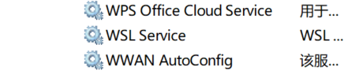

Docker是个啥？
基本概念
Docker是一个可以把应用和环境打包进一个微型镜像（系统）的地方
Docker是一个用于构建,运行,传送,应用程序的平台
配置文件、启动命令 应用程序、环境变量 第三方软件库 依赖包运行时环境 操作系统（OS)全部打包
容器（container）和虚拟机（VMARE）的差别
- 虚拟机需要一个完整的电脑所需要的零件支持
- 容器只需要相应的依赖资源包
- 这导致虚拟机所占用资源大大多于容器
- 两者都依赖于物理机
基本原理和概念
- 镜像：是一个模板
- 容器：镜像中的一个实例
- 仓库：存储Docker镜像的地方（Dockerhub）
Docker的安装
只需去官网下载即可
可能会遇到WSL服务没有启用的情况
1 | |

找到并启用就可以啦
容器化
顾名思义将应用程序打包进容器
然后再容器中运行程序
步骤
- 创建一个Dockerfile
- 使用Dockerfile构建镜像
- 使用镜像创建和运行容器
Dockerfile
包含一条条指令
来教Docker怎么构造镜像

工作流
- 编写Dockerfile
- 构建镜像
- 启动容器
Docker是个啥？
https://harden13131.github.io/2026/08/24/Docker是个啥？/